<title>Jan Orava</title>
<meta charset="utf-8">
<meta name="viewport" content="width=device-width, initial-scale=1">
<link rel="preconnect" href="https://fonts.googleapis.com">
<link rel="preconnect" href="https://fonts.gstatic.com" crossorigin>
<link href="https://fonts.googleapis.com/css2?family=Fraunces:opsz,wght@9..144,400;9..144,600;9..144,700&family=Inter:wght@400;500;600&display=swap" rel="stylesheet">
<link rel="stylesheet" href="style.css">

<header class="hero" id="dnes">
  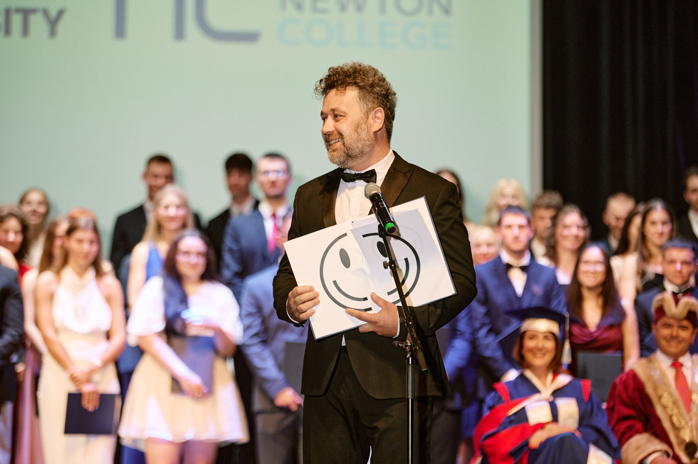
  <div class="hero-shade"></div>
  <div class="hero-text">
    <p class="kicker">Dnes</p>
    <h1>Jan Orava</h1>
    <p class="title">
      Chief Research and Impact Officer na <strong>NEWTON University</strong>,
      kde vedu i Grant Support Centre. A co mě v životě baví čím dál víc —
      <strong>systemická teorie</strong>.
    </p>
  </div>
</header>

<nav class="jumpnav">
  <a href="#dnes">Dnes</a>
  <a href="#v-karantene">I. V karanténě</a>
  <a href="#koplac">II. KoPlac</a>
  <a href="#svitava">III. Svitava</a>
  <a href="#bici">IV. Bicí</a>
  <a href="#kontakt">Kontakt</a>
</nav>

<main>
  <section class="intro">
    <p>
      Divadlo a cirkus se mnou táhnou celý život — jako principál, organizátor
      i tak trochu šašek. Tady jsou čtyři dějství, která mě zformovala.
    </p>
  </section>

  <section class="act" id="v-karantene">
    <div class="act-head">
      <span class="act-no">I.</span>
      <div>
        <h2>V karanténě</h2>
        <p class="act-years">Mezi smrky &amp; šapitó · cca 2010–2015</p>
      </div>
    </div>
    <div class="act-body">
      <div class="act-media placeholder">
        <span>Fotka bude doplněna</span>
      </div>
      <div class="act-text">
        <p>
          Kočovné divadlo navazující na tradici potulných divadelních spolků —
          <strong>V karanténě, o.s.</strong> Před každým představením karnevalově-cirkusový
          průvod obcí: maškary, chůdaři, žongléři, buben a principál s megafonem
          zvoucí na večerní hru.
        </p>
        <p>
          Vlastní multižánrový festival <strong>Mezi smrky – divadelní pouť</strong>
          (divadlo, hudba, výstavy, autorská čtení) se konal na <strong>Art Mlýně
          v Bohuslavicích u Kyjova</strong>, vždy přes celý víkend, s cca 200 návštěvníky
          a desetičlenným pořadatelským týmem. Logo: smrček v červeném kolečku.
        </p>
        <p class="source">
          O spolkovém životě natočila i Česká televize —
          <a href="https://www.ceskatelevize.cz/porady/1097944695-nas-venkov/307295350020013/" target="_blank" rel="noopener">Náš venkov: Lesk a bída spolkové činnosti</a>.
        </p>
        <blockquote class="medailonek">„<span class="fill">[tvůj komentář sem]</span>“</blockquote>
      </div>
    </div>
  </section>

  <section class="act" id="koplac">
    <div class="act-head">
      <span class="act-no">II.</span>
      <div>
        <h2>KoPlac</h2>
        <p class="act-years">Coworking v Brně · 2014 – dosud</p>
      </div>
    </div>
    <div class="act-body reverse">
      <div class="act-media placeholder">
        <span>Fotka bude doplněna</span>
      </div>
      <div class="act-text">
        <p>
          Coworkingové centrum v Brně, které jsem založil a od roku 2014 v něm
          působím jako předseda a mentor. Prošlo jím přes <strong>200 zahraničních
          studentů</strong> — místo, kde se potkávaly nápady, jazyky a lidé z celého světa.
        </p>
        <blockquote class="medailonek">„<span class="fill">[tvůj komentář sem]</span>“</blockquote>
      </div>
    </div>
  </section>

  <section class="act" id="svitava">
    <div class="act-head">
      <span class="act-no">III.</span>
      <div>
        <h2>Svitava pod parou</h2>
        <p class="act-years">Wagon na nábřeží · 2016–2020</p>
      </div>
    </div>
    <div class="act-body">
      <div class="act-media">
        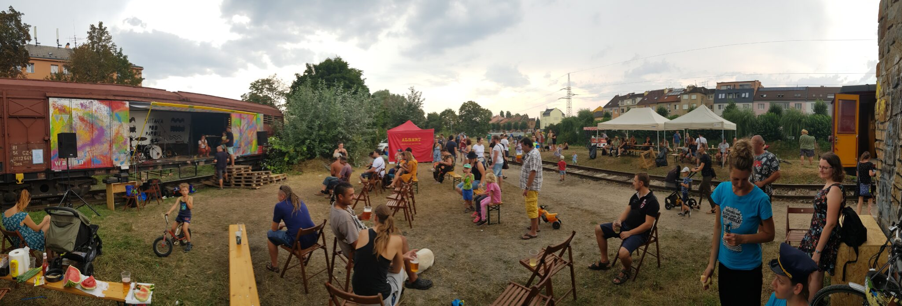
      </div>
      <div class="act-text">
        <p>
          Site-specific projekt na nábřeží řeky Svitavy u Tkalcovské, vzniklý
          v rámci <strong>Městských zásahů Brno</strong> 2016. Starý nákladní
          vagon se proměnil v pódium pro kapely a divadlo, k tomu parní vlak,
          železniční expozice a cirkusové šapitó s programem pro nejmenší.
        </p>
        <p>
          Sezónní akce běžela <strong>2016–2020</strong> v týmu se Kristýnou
          Smržovou, Igorem Serenčkem a Romanem Zmrzlým, s podporou ČD Cargo,
          Teplárny Brno, Povodí Moravy, Fakulty architektury VUT a dalších.
        </p>
        <p class="source">
          Reportáž odvysílala ČT ArtZóna
          (<a href="https://www.ceskatelevize.cz/porady/12072033166-artzona/319294340010010/cast/719916/" target="_blank" rel="noopener">17. 9. 2019</a>),
          projekt popsalo i studio
          <a href="https://kobraarch.cz/portfolio/svitava-pod-parou/" target="_blank" rel="noopener">KOBRA</a>.
        </p>
        <blockquote class="medailonek">„<span class="fill">[tvůj komentář sem]</span>“</blockquote>
      </div>
    </div>
    <div class="gallery">
      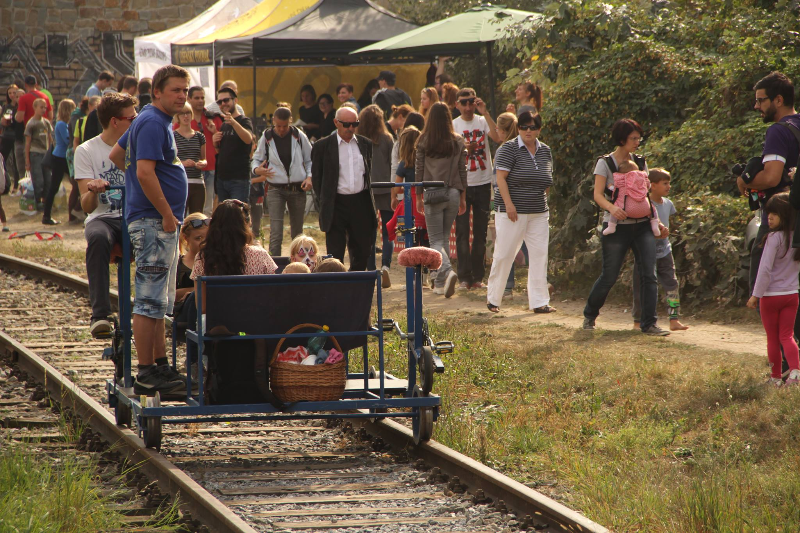
      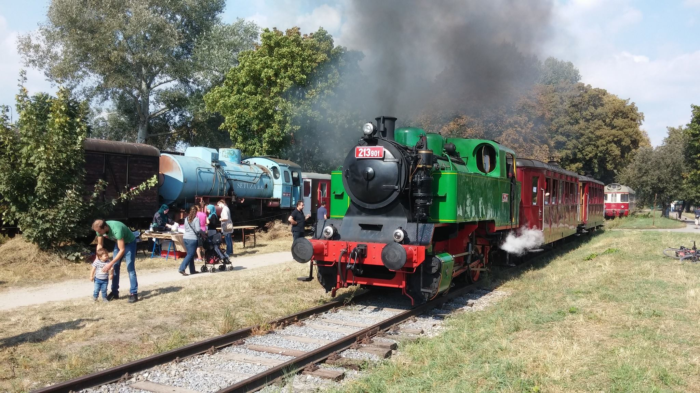
      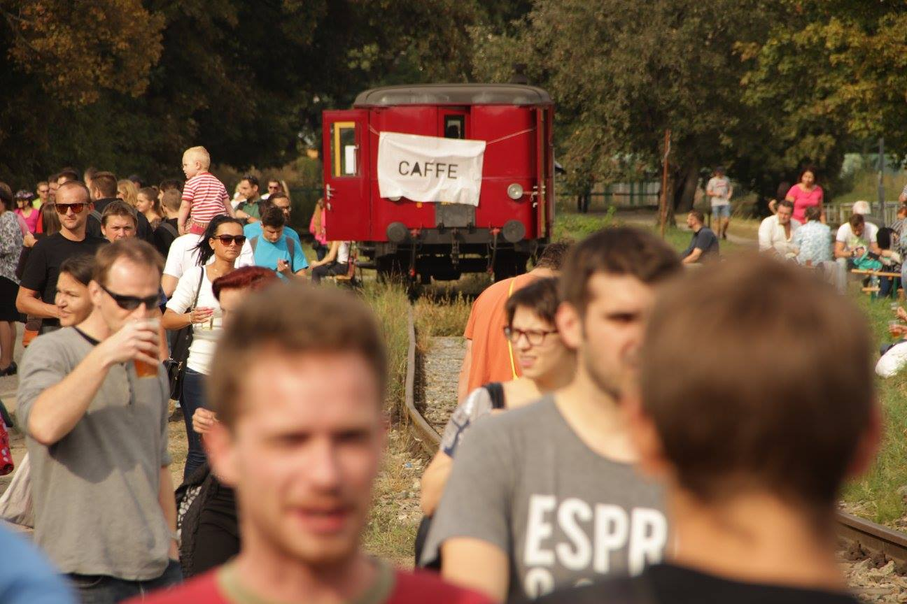
      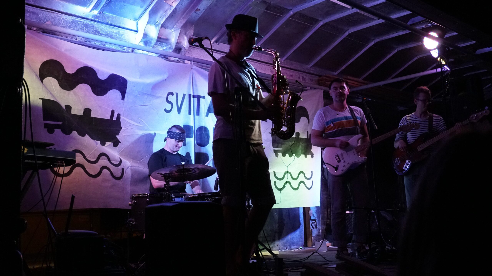
      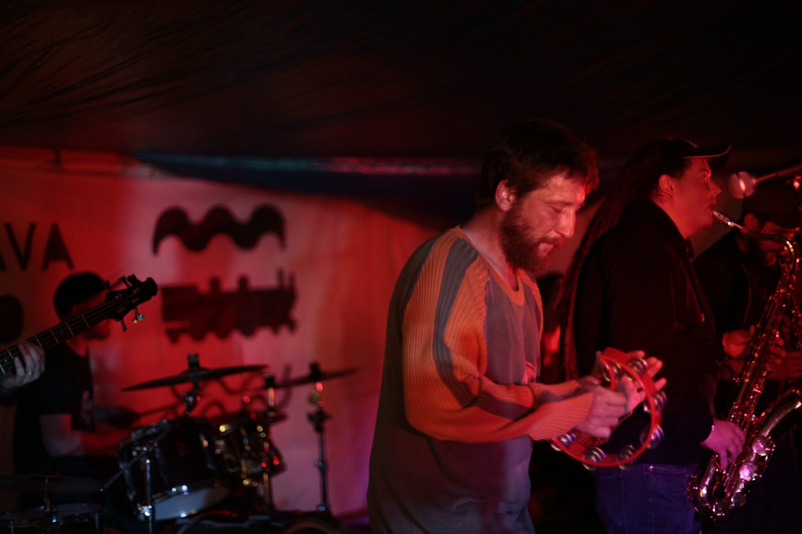
      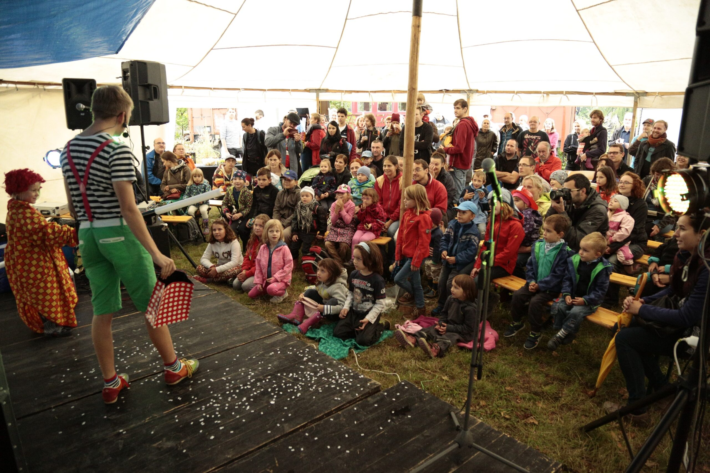
      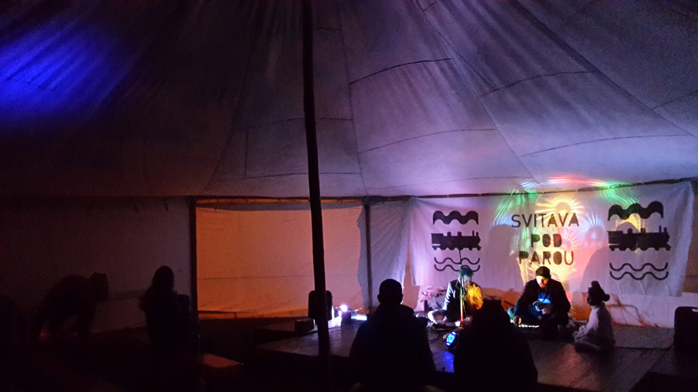
      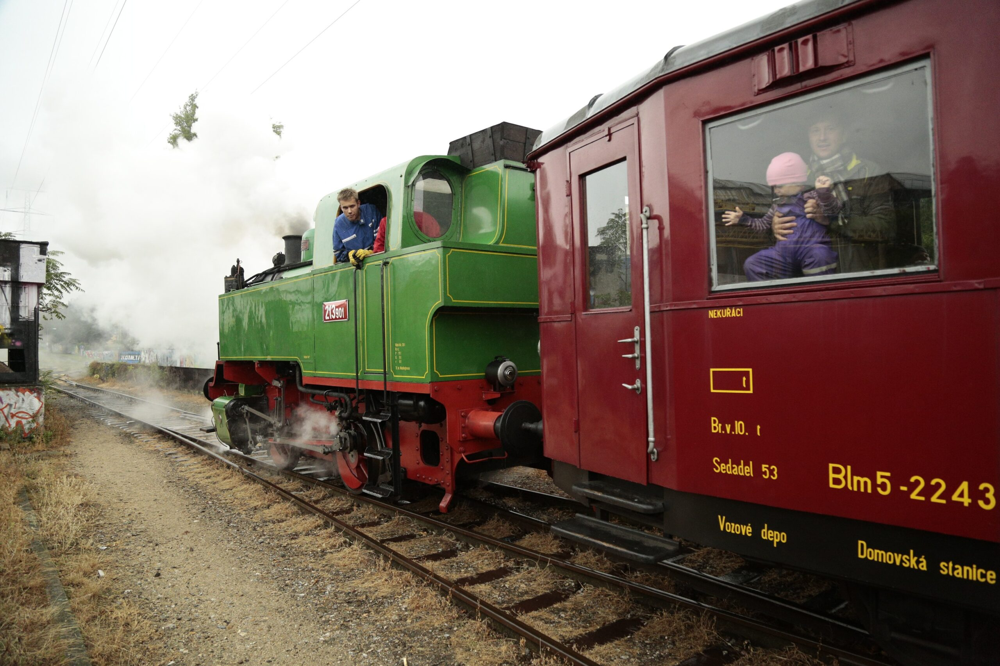
      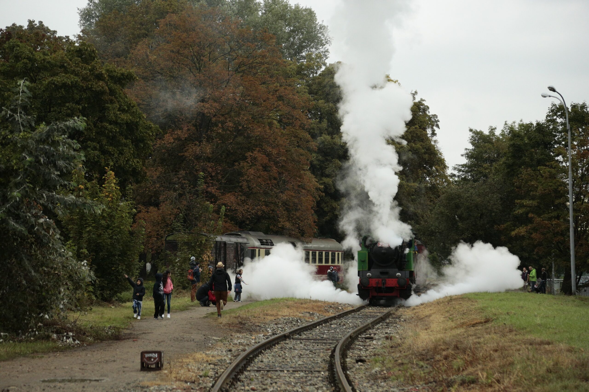
    </div>
  </section>

  <section class="act" id="bici">
    <div class="act-head">
      <span class="act-no">IV.</span>
      <div>
        <h2>Bicí</h2>
        <p class="act-years">Osobní záliba · dosud</p>
      </div>
    </div>
    <div class="act-body reverse">
      <div class="act-media placeholder">
        <span>Fotka bude doplněna</span>
      </div>
      <div class="act-text">
        <p>
          Bicí jako celoživotní vášeň — vždycky v nějakém alternativním
          seskupení, od punkových kapel dál.
        </p>
        <blockquote class="medailonek">„<span class="fill">[tvůj komentář sem]</span>“</blockquote>
      </div>
    </div>
  </section>

  <section class="contact" id="kontakt">
    <h2>Kontakt</h2>
    <p><a href="mailto:jan@oliv.cz">jan@oliv.cz</a></p>
    <p><a href="tel:+420739027166">+420 739 027 166</a></p>
    <p><a href="https://www.linkedin.com/in/janorava" target="_blank" rel="noopener">linkedin.com/in/janorava</a></p>
  </section>
</main>

<footer>
  <p>© 2026 Jan Orava</p>
</footer>
